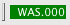

In order to use the SAP R/3 connector, you have to enter the connection data first. Consult your system administrator if you're unsure about the connection settings.
The connector provides a so-called trim widget, a small part of the status bar, that displays the current connection status. If you're not connected to a SAP R/3 system, the status display is gray:
You can right-click on this status display to open a context menu that will allow you to connect to one of the systems defined in the connection settings. This will bring up the login dialog:
As long as the connection is active, the status display is green and shows the system ID and client you're connected to:
You can use the context menu to disconnect from the system. The connection is also closed automatically when closing the application.
Note that applications may request an active connection at any time. If you're currently connected to a system, that connection will be used; if you're not connected, the login dialog will be shown.